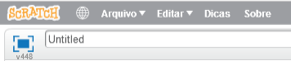

Compartilhe seu projeto
Agora você pode compartilhar suas coisas favoritas com outras pessoas!
Insira um título para o seu projeto.

Quando você estiver pronto para compartilhar seu projeto, clique no botão "Compartilhar" na parte superior da tela.
Para adicionar notas e créditos, clique:

Aqui temos um vídeo sobre como editar a página do projeto:
Para mais ideias, clique em  Todas as dicas.
Todas as dicas.